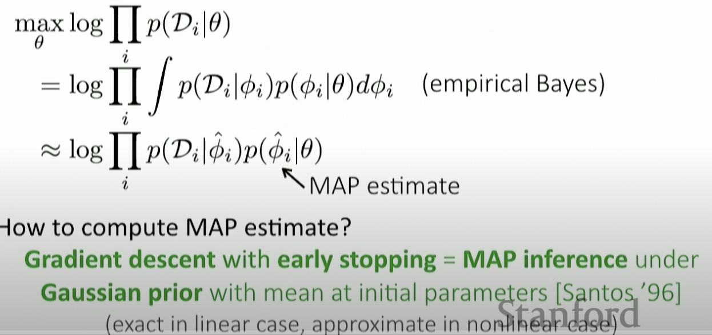
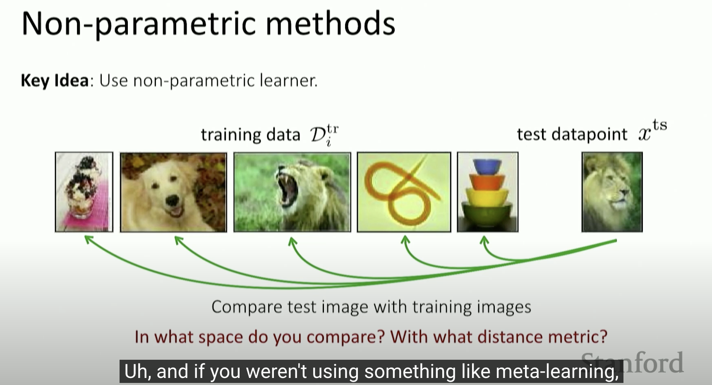
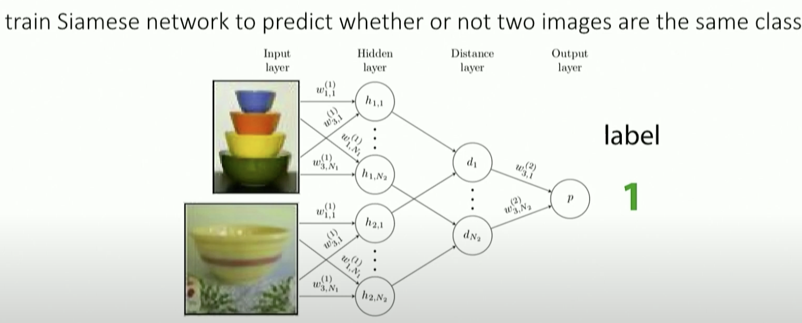
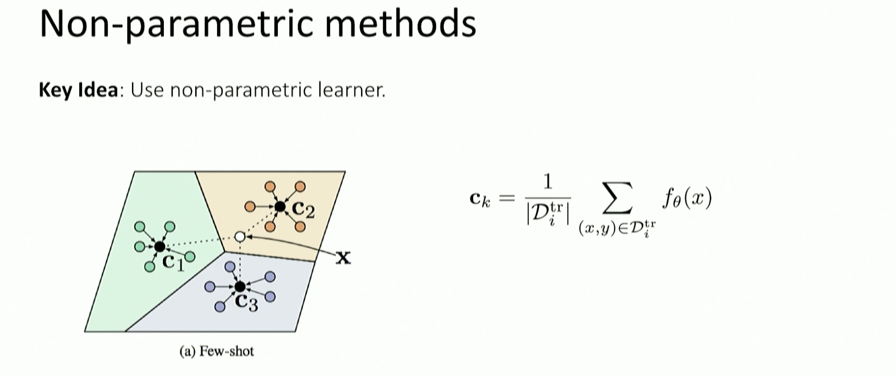

MetaLearning Learning Note - 4
- optimization based on meta learning
- non-parametric few-shot learning
- properties of meta learning algorithms.
Recap Optimization based meta learning
Fine-tuning => MAML our pre-trained parameters will be fine tuned in the test process. $\theta \rightarrow \phi$. In this way, these two varaibles are the same value.
Probabilistic Interpretation of Optimization-Based Interference
meta-parameter $\theta$ serve as prior;
$$max_{\theta} log \prod_i p (D_i|\theta)$$
And if we use $\theta$ to initalize $\phi$, we can have this formula:
$$ log \prod \int p(D_i| \phi_i)p(\phi_i,\theta) d \theta_i$$
$$log \prod p(D_i | \overline{\phi_i})$$
as the empirical bayes.

- Optimizaton-Based Inference
Acquire $\phi_i$ through optimization
initialization for fine-tuning
gradient decent + early stopping == MAML
Challenges:
- NAS is also important.
- Bi level optimization can exhibit instabilities - metaRL learn inner vector learning rate - MetaSGD, AlphaMAML
- Backpropagating through many inner GD is compute & memory intensive
we can compute the gradient of $d \frac{\phi}{\theta}$ call the meta gradient implicit function theory.
Can we compute the meta-gradient without differentiating through the optimization path?
Idea: Derive meta-gradient using the implicit function theorem.
Allows for second order optimizers in inenr loop.
Non parametric few shot learning
In low data regimes, non-parametric methods are simple work well.

Learn how to compare using your meta-learning traning for your new tasks
- Siamese network to predict whether or not two images are the same class

but this way, in meta-training: binary classification, but in the metatest, we need to do N-binary classification which means N-way classification.
we do not need to use meta-learner to learn a meta parameter. And do not need to use meta parameter to generate parameter for meta test.

- idea: learn non-linear relation module on embeddings.
- idea: learn infinite mxitre of prototypes
- idea: Perform relationships like nodes in the graph
Properties of meta learning algorithms
- Comparison of approaches
- computation graph perspective
We can mix & match complonents, e.g. embedding + meta-training or MAML + Prototypes - Algorithmic Properties Perspective
- Expresive power
the ability for f to represnet a range of learning procedures - Consistency
learned learning procedure will solve task with enough data. Reduce reliance
Black box - no inductive bias at the initialization
- Expresive power
- Uncertainty awareness
ability to reason about ambiguity during learning. principled Bayesian approaches.